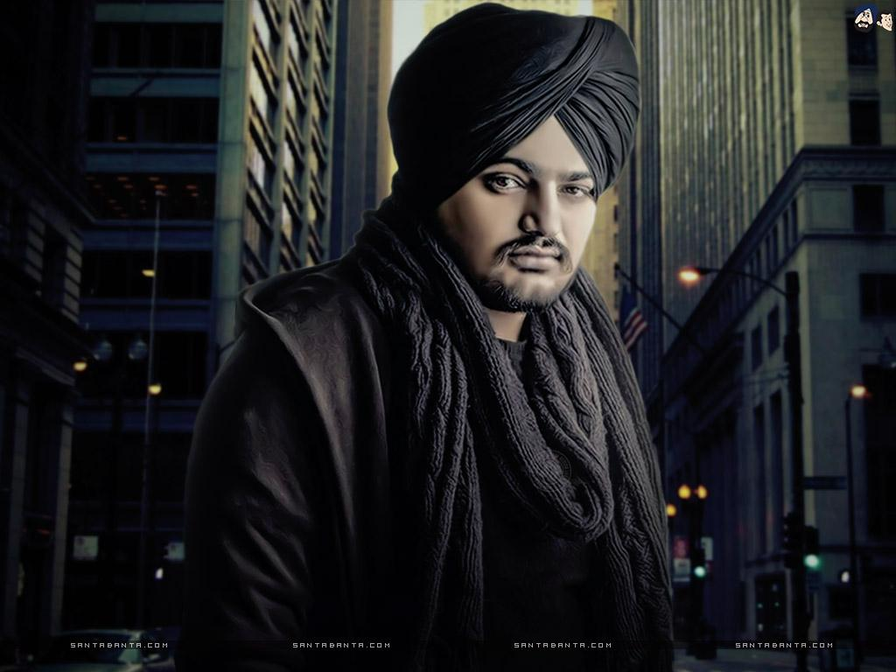

Sidhu Moosewala

The GOAT of punjabi industry
About the Legend
Sidhu Moose Wala was an Indian Punjabi singer, rapper,[1] songwriter and actor associated with Punjabi music and films, who has released three studio albums, one extended play and sixty-three singles as Albums Chart . Six of his singles have featured on the global YouTube music charts, while ten have featured on the UK Asian music chart published by Official Charts Company.
His song 295 is very popular as he has described about his case in this song .
His song So High was so much loved by his fans.
For more information, check out Sidhu Moosewala on Wikipedia. ( Developed by @ Vanraj Salotra.
)